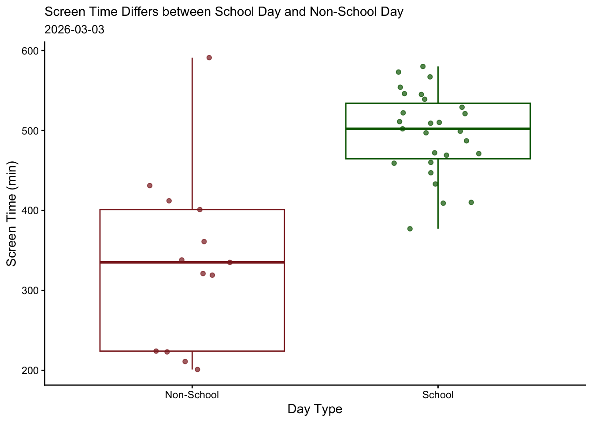

library(tidyverse) # reading in tidyverse
library(here) # reading in here package
library(janitor) # read in janitor package
library(readxl) # read in readxl package
library(ggeffects) # read in ggeffects package
library(DT) # read in DT package
library(readr) # read in readr package
library(dplyr) # read in dplyr package
personal <- read_csv(here("posts", "code_project", "personaldata.csv")) # store env193ds_personaldata.csv data in object personalA project for UCSB ENV S 193DS. I collected data on my screen time, including both phone and computer (collected through apple feature) with primary predictor variable day type (school/non-school) with several additional variables to answer my main question: Does my screen time change between school days or non-school days?
Set Up
Loading in packages and storing the data of screen time vs predictor variables in an object called personal
Interactive Data Table
Creating an interactive data table to show the collected personal data. All of the data can be sorted and searched for each column.
Brief data dictionary for mydata
Response Variable: Screen Time
Main predictor variable: Day Type (School Day or Non-School Day)
Other response variables collected:
Total Class Time (min)
Sleep Time (min)
Social Plans (yes or no)
Work/Study Time (min)
Date (yyyy-mm-dd)
Day of the Week (Monday, Tuesday, Wednesday, Thursday, Friday, Saturday, Sunday)
datatable( # interative data table
personal, # dataset to display
rownames = FALSE, # removes the extra row-number column
filter = "top", # adds filter/search boxes at the top of each column
options = list(
pageLength = 8, # shows 8 rows per page
autoWidth = TRUE, # adjusts column widths automatically
scrollX = TRUE # allows horizontal scrolling if table is too wide
),
caption = "Interactive table of my personal data" # title above the table
)Data Visualization
I am visualizing the collected data in boxplot and jitter geometries through ggplot on R. Details of the code explained in the caption.
personal_clean <- personal |> # start with storing personal data frame in personal_clean
clean_names() # clean names so it only contains lowercase and underscore
ggplot(data = personal_clean, # start ggplot call with my_data_clean data frame
aes(x = day_type, # choose x-axis
y = screen_time_min,# choose y-axis
color = day_type)) + # change color based on day_type
geom_boxplot() + # first layer: boxplot
geom_jitter(height = 0, # second layer: jitter
width = 0.2, # no height jitter, limit horizontal jitter
alpha = 0.7) + # lower opacity of jitter
labs(title = "Screen Time Differs between School Day and Non-School Day", # label title
subtitle = "2026-03-03", # label subtitle with most recent observation date
x = "Day Type", # relabel x-axis
y = "Screen Time (min)") + # relabel y-axis
theme_classic() + # change ggplot theme
theme( # use theme() function
plot.title = element_text (size = 11), # change title size
plot.subtitle = element_text (size = 10)) + # change subtitle size
scale_color_manual(values = c( # Manually select colors of the graph
"School" = "darkgreen",
"Non-School" = "brown4" )) + # manually change colors of the graph to be different from default
theme(legend.position = "none") #taking out legend
Caption
Figure 1. Screen time differs between school days and non-school days.
Small semi-transparent points represent individual measurements of daily screen time (minutes) for school and non-school days. Non-school days are shown in red and school days in green. Boxplots summarize the distribution of screen time for each group, with the center line representing the median, the boxes representing the interquartile range (IQR), and the whiskers showing the spread of the data beyond the quartiles. Data collected March 3, 2026.
Citation
BibTeX citation:
@online{makinoda2026,
author = {Makinoda, Hambee},
title = {Personal {Data} {Project}},
date = {2026-03-10},
url = {https://Hambanana0923.github.io/posts/personal_project/},
langid = {en}
}
For attribution, please cite this work as:
Makinoda, Hambee. 2026. “Personal Data Project.” March 10,
2026. https://Hambanana0923.github.io/posts/personal_project/.